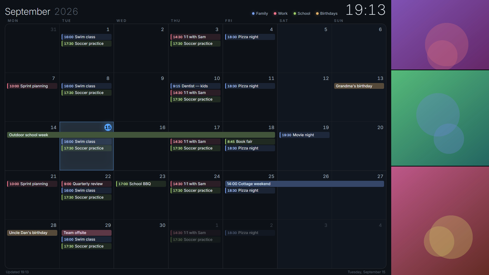
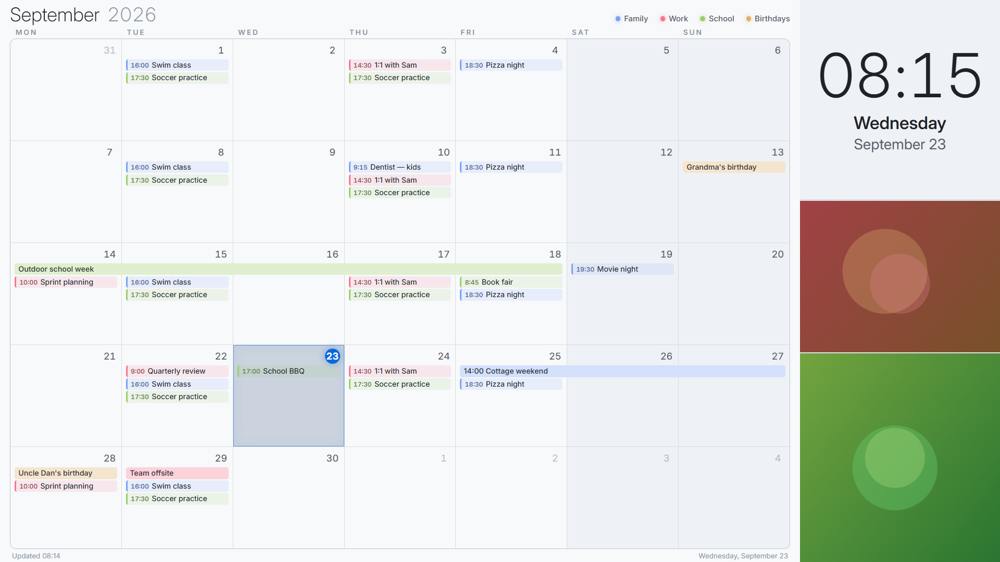
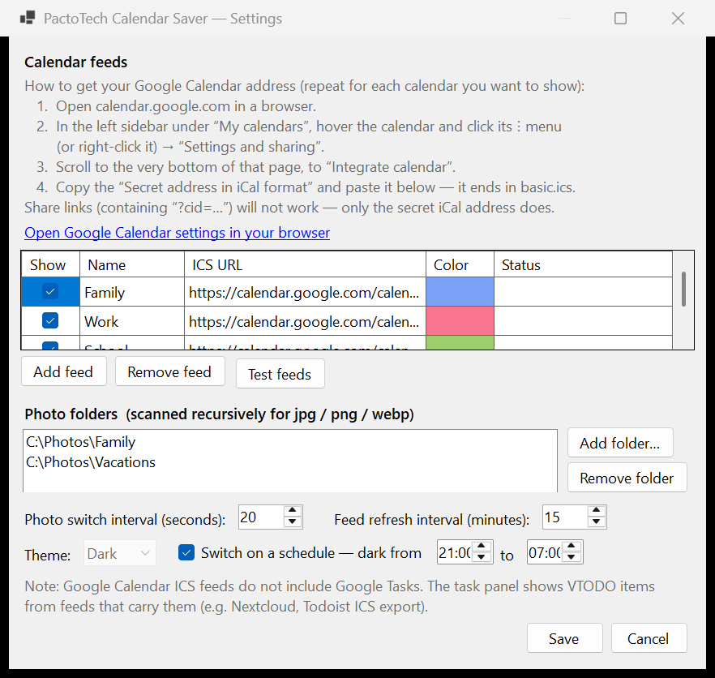

A free Windows 11 screensaver that turns your monitor into a family wall calendar — every event from your Google, Outlook, or iCloud calendars, readable from across the room.
free & open source · Windows 11 · no account, no subscription
download → right-click → Install
Windows will show a blue “Windows protected your PC” screen — that’s normal for a free app without a paid signing certificate. Click More info, then Run anyway to continue. The full source is on GitHub if you’d like to check it first.
view source on GitHub ☕ Enjoying this free tool? Leave a tip
The monitor you already own becomes the family command center whenever it idles.
Add any number of ICS feeds — Google, Outlook, iCloud, Nextcloud — each with its own name and color, with a legend on top.
No “+3 more” hiding things. Text auto-scales so even the busiest day fits, readable from the kitchen doorway.
Your calendar links stay on your PC. No account, no cloud service, nothing phones home — feeds are fetched directly.
Point it at your photo folders and the side panel becomes a gently crossfading family photo wall.
Fixed theme, or light during the day and dark at night — it follows the hours you choose.
Feeds refresh on an interval and cache to disk. A dropped connection still shows the last good calendar.
Download, right-click the .scr file, choose Install. If Windows shows a blue “protected your PC” screen, click More info → Run anyway — expected for a free unsigned app. Self-contained; nothing else to install.
In Screen Saver Settings pick PactoTechCalendarSaver, then open Settings… to add calendars and photos.
In Google Calendar: Settings and sharing → Integrate calendar → copy the Secret address in iCal format. The settings dialog walks you through it and live-tests every feed.


This screensaver is the free way to get a family calendar on a screen you already own — but it sleeps when someone sits down at the PC. A Skylight Calendar is the appliance version of the same idea: a wall-mounted touchscreen that shows your family’s schedule 24/7, syncs with Google, Apple, Outlook and Cozi, and adds chore charts and meal planning the kids can tap. If your family loves the screensaver, it’s the natural upgrade. Three sizes:
Affiliate links — we may earn a commission at no extra cost to you. We are an independent site and not associated with the seller. As an Amazon Associate we earn from qualifying purchases. Ratings shown as of July 2026.
A calendar screensaver puts your family’s schedule on a screen that would otherwise sit dark. Instead of bouncing logos, an idle Windows PC or a spare monitor shows a full-month wall calendar: school events, work meetings, birthdays, practices, and appointments from every calendar your family uses, color-coded by person or category, alongside a rotating photo collage.
Calendar Saver works with any calendar that publishes an ICS feed — Google Calendar’s secret iCal address, Outlook, iCloud, Nextcloud, and most others. Nothing leaves your machine: the screensaver fetches the feeds directly, caches them for offline viewing, and never asks for your account password. It is completely free, open source, and subscription-free.
People often find this tool while searching for a free Skylight Calendar alternative — and that’s a fair description: same month-at-a-glance idea, using hardware you already own. The trade-off is that a screensaver yields the screen when someone uses the PC. Families who want an always-on, touch-first display in the hallway or kitchen eventually add a dedicated device like the Skylight Calendar above — many run both: the screensaver on the office PC, the Skylight by the fridge.